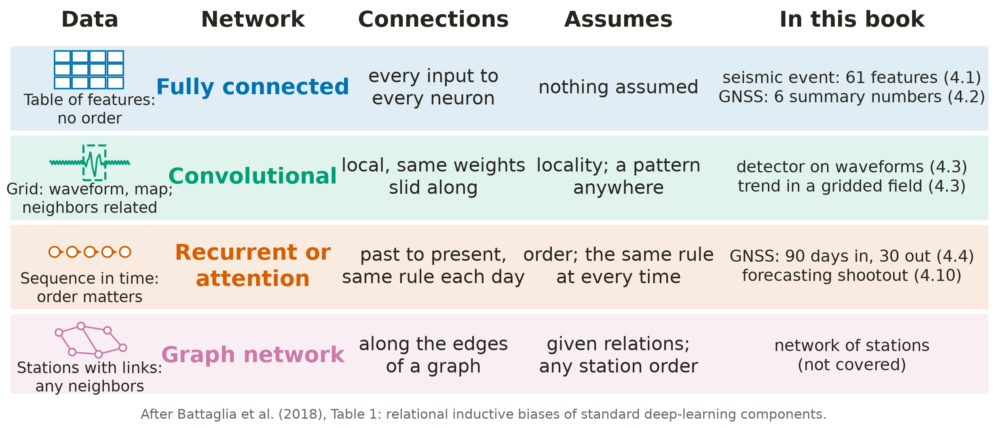
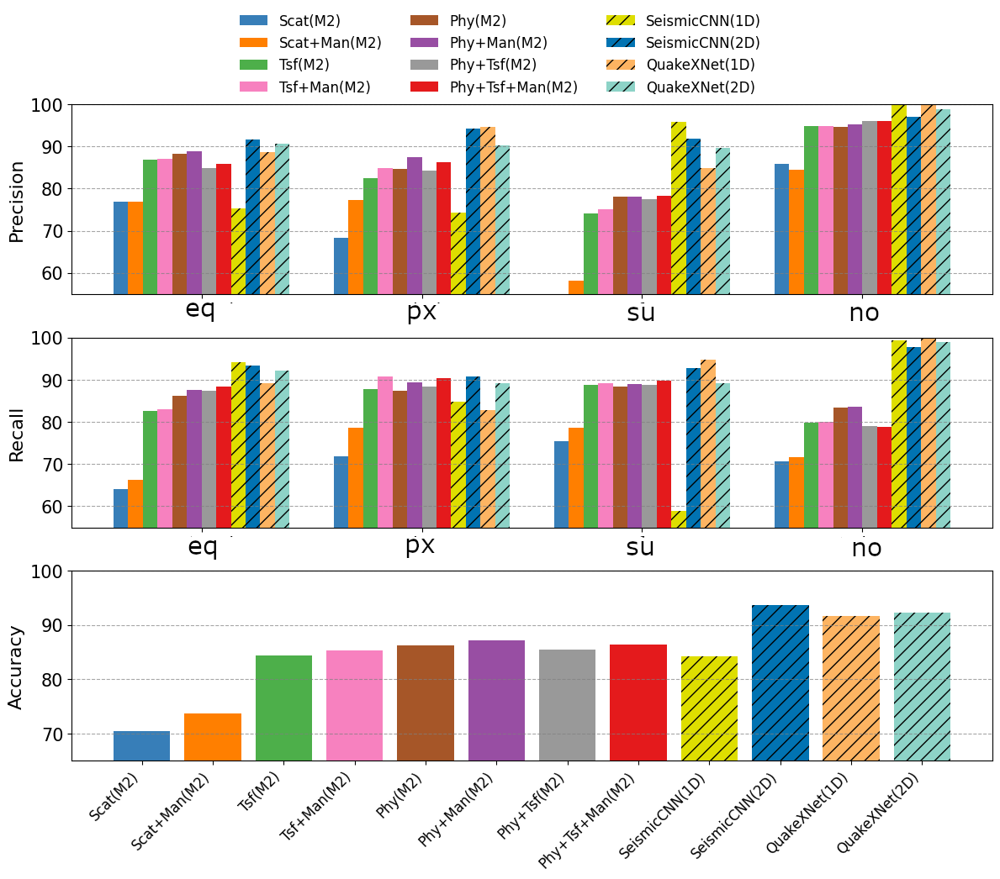
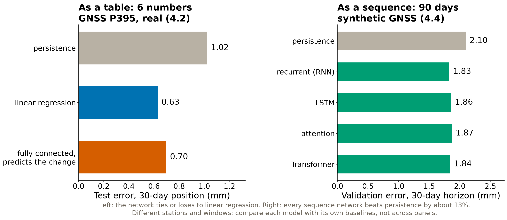
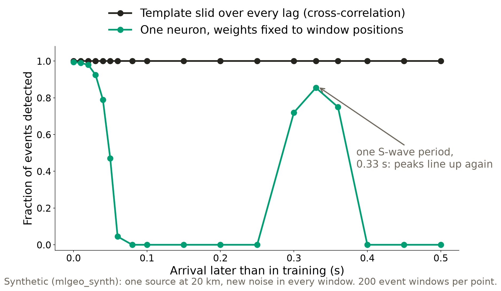
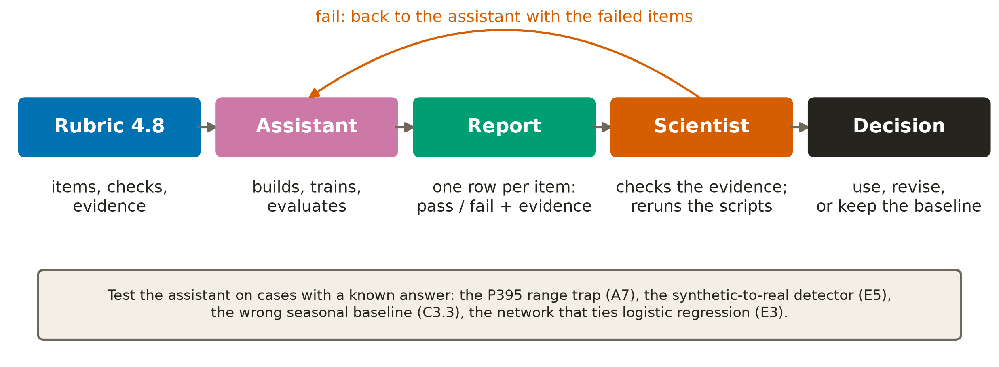

Architecture follows the data:
choosing a network, and the rubric
Core of deep learning, session 4 · Book section 4.8
🧭
Today’s question
Three sessions, three networks.
Given a geoscience dataset, which network should we try, and how will we know it was worth it?
Reading: 4.8 A best-practice rubric for deep learning · review 4.1–4.4
The framework: data structure chooses the network

Each layer assumes how its inputs are related. Choose the one whose assumption is true for your data.
In the literature: one result for each kind of network
Table
Fully connected. Glacier mass balance, French Alps, from features: error 0.51 m w.e. per year on held-out glaciers, against 0.74 for Lasso.
Bolibar et al. (2020). The Cryosphere, 14, 565–584. CC BY 4.0.
Grid
Convolutional. El Niño from ocean maps: useful skill for about 1.5 years, above dynamical forecast systems.
Ham, Kim & Luo (2019). Nature, 573, 568–572.
Sequence
Recurrent (LSTM). Floods in ungauged rivers, 5 days ahead, as reliable as same-day global nowcasts; operational in over 80 countries.
Nearing et al. (2024). Nature, 627, 559–563.
Graph
Graph network. 10-day global weather on a mesh of cells: better than ECMWF’s deterministic forecast on 90% of 1,380 targets.
Lam et al. (2023). Science, 382, 1416–1421.
Each study chose the network that matches how its data are organized.
Same seismic events, two structures

📍 In-situ sensor 🪨 Solid Earth 📈 Seismology
Pacific Northwest events as a table of features: random forests and our networks reach 87–89%. As waveforms and spectrograms: convolutional networks reach higher scores on the same curated set.
Kharita, Denolle, Hutko, Hartog & Malone (2026), Seismica 5(1), Fig. 5. doi:10.26443/seismica.v5i1.2068. CC BY 4.0.
Same GNSS question, two structures

📍 In-situ sensor 🪨 Solid Earth 📐 Geodesy
As six summary numbers, the network does not beat linear regression. As a 90-day sequence, every sequence network beats persistence by about 13%. Compare each with its own baselines.
What an assumption buys: a pattern learned once

A fully connected neuron trained on arrivals at one position detects none when the arrival moves by 0.08–0.25 s. The same weights slid along the record detect all of them.
A decision guide

Start from one data sample and ask what it is. The answer chooses the network, and also the baseline it must beat.
Best practices across the three networks
| Fully connected | Convolutional | Recurrent, attention | |
|---|---|---|---|
| Input | standardized features | normalized records | causal windows |
| Size it by | samples per weight | receptive field vs pattern | context vs memory |
| Baseline | linear, logistic, forest | STA/LTA, template | persistence, seasonal |
| Report | units, confusion matrix | score against SNR | error against horizon |
The rubric drives the assistant; the scientist checks

The assistant builds and reports one row per rubric item, with its evidence. The scientist checks the evidence and reruns the scripts. Failed items go back to the assistant.
Open 4.8 and your project
- Write rubric section A for your project, with its evidence
- Use the decision guide: which network, and which baseline?
- Give 4.8 to your coding assistant on one task; collect its report
- Check two items of its report yourself: was the evidence real?
Book section 4.8 · bring your report to the next project check-in
ESS 469/569 · Machine Learning in the Geosciences · Autumn 2026